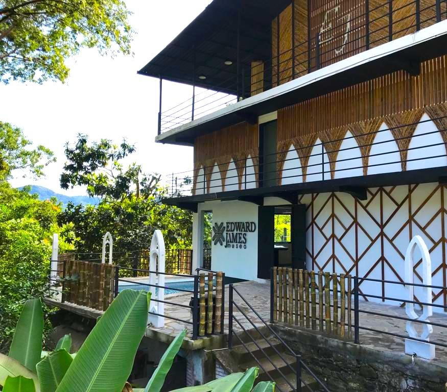
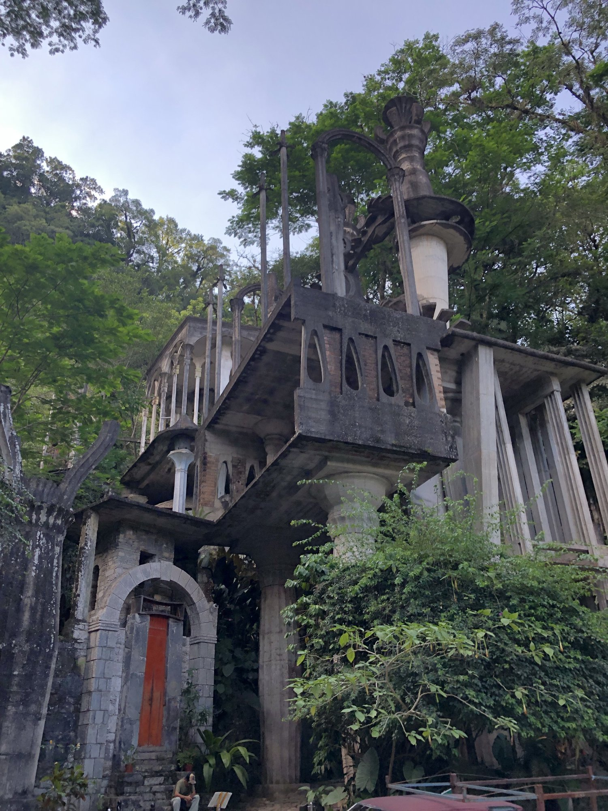
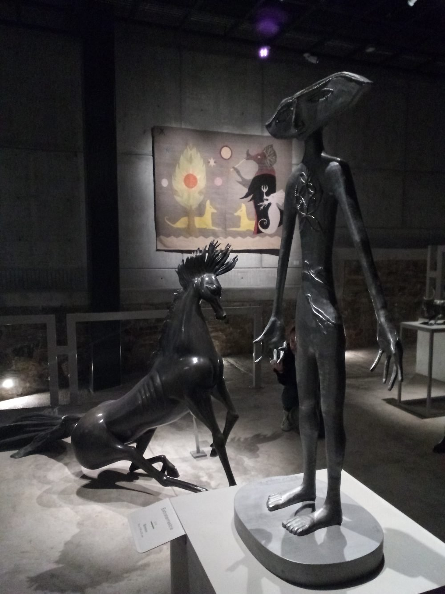

Museo Edward James
Primer museo dedicado a Edward James, figura clave del arte moderno, inaugurado en el 2022.
El FICXILITLA se llevará a cabo en distintas sedes emblemáticas del Pueblo Mágico de Xilitla, entre las que destacan el Jardín Escultórico Edward James, la Plaza Principal de Xilitla, Cervecería James, el Museo Leonora Carrington Xilitla y el Museo Edward James.
El festival dará inicio el 2 de diciembre en Cervecería James con la presencia de realizadores e invitados especiales de la cinta inaugural.
Posteriormente, a partir del 3 de diciembre, se realizarán proyecciones de muestras y competencias oficiales en todas las sedes participantes. Asimismo, se presentarán premieres y funciones especiales acompañadas por sus realizadores.
Comprometidos con la formación y el intercambio cultural, el festival contará con talleres, conferencias y enlaces virtuales con cineastas internacionales.
La ceremonia de premiación se llevará a cabo el 5 de diciembre en Cervecería James, y la clausura el 6 de diciembre en la plaza principal de Xilitla, acompañada por la gran pantalla itinerante de la Cineteca Alameda.
Primer museo dedicado a Edward James, figura clave del arte moderno, inaugurado en el 2022.

Cervecería de bebidas artesanales ubicada frente al Jardín Escultórico de Edward James.

Creado por Edward James, excéntrico poeta, artista británico y mecenas del movimiento surrealista. Entre cascadas y pozas, un laberinto surrealista se abre paso.

Dedicado a Leonora Carrington. El recinto alberga una colección de escultura, litografía y dibujo. Fue íntima amiga del poeta y coleccionista Edward James.

Exhibición itinerante de la Cineteca Alameda de la capital de S.L.P.